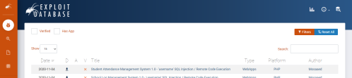
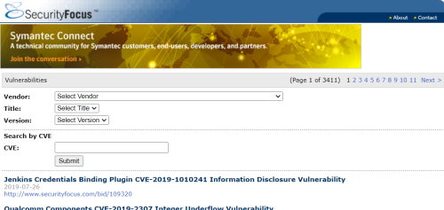
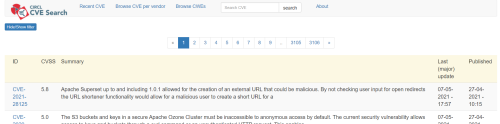
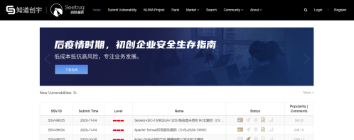
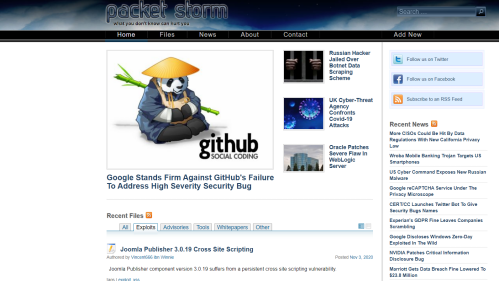
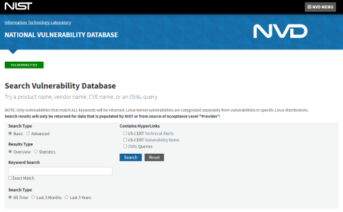

Databases of exploits
Databases of exploits
•
Exploit-DB instead of search manually in Exploit-DB we can
use searchsploit
•
Security Focus BID Search •
CIRL CVE
Search •
SEEBUG Vulnerability Database •
Packet Storm Security
•
National Vulnerability Database only vulnerabilities, no exploit
•
www.cybersecurity-help.cz very useful search engine